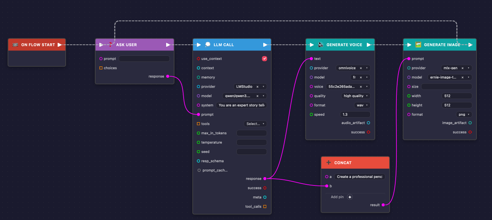
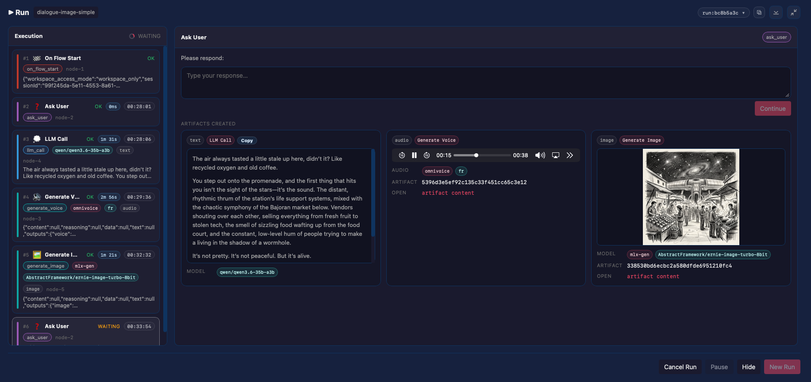
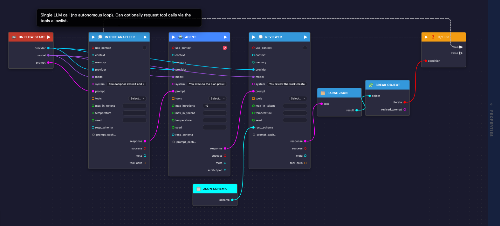
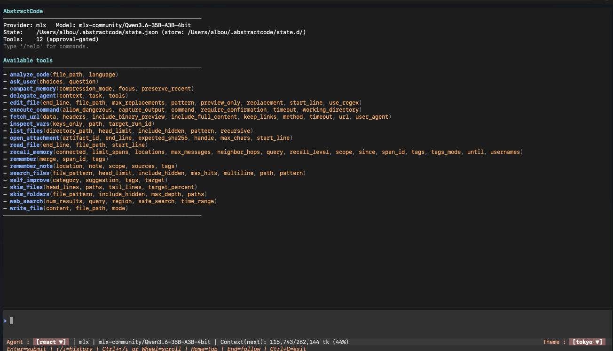
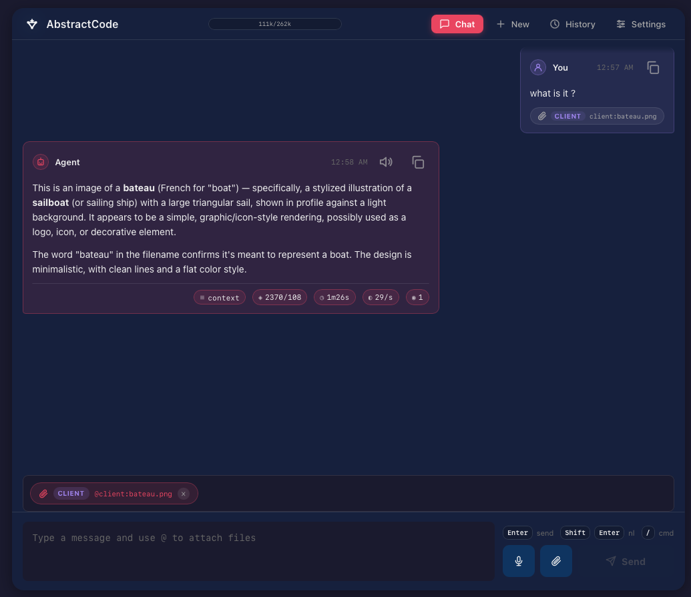
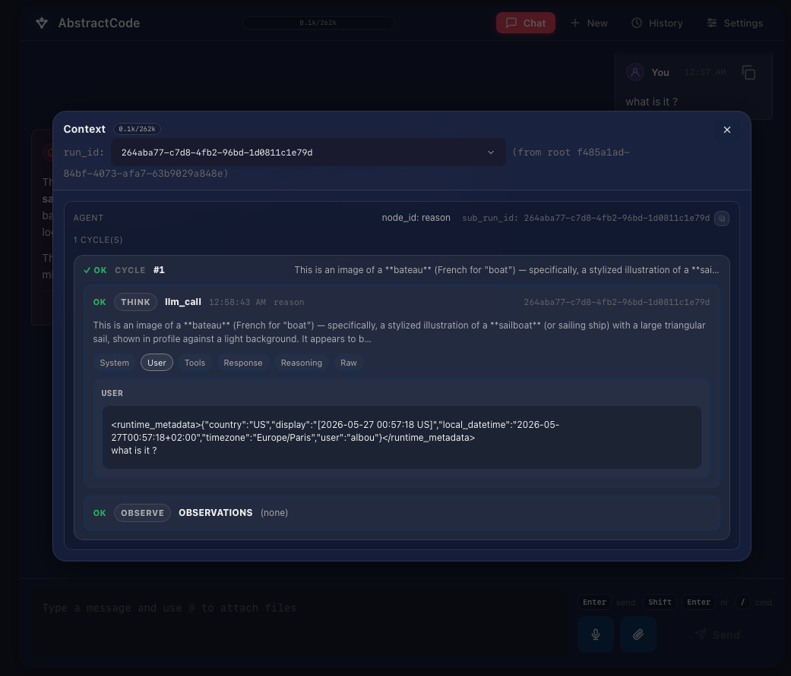
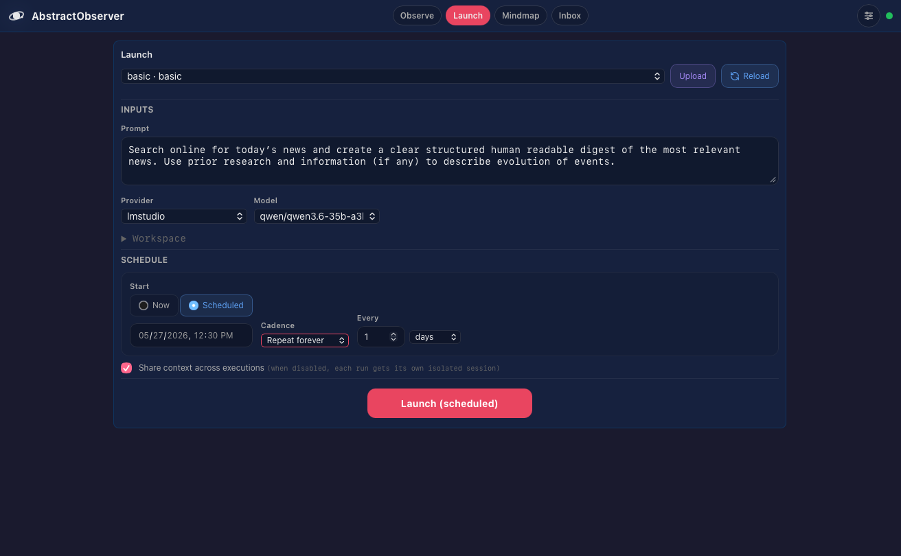
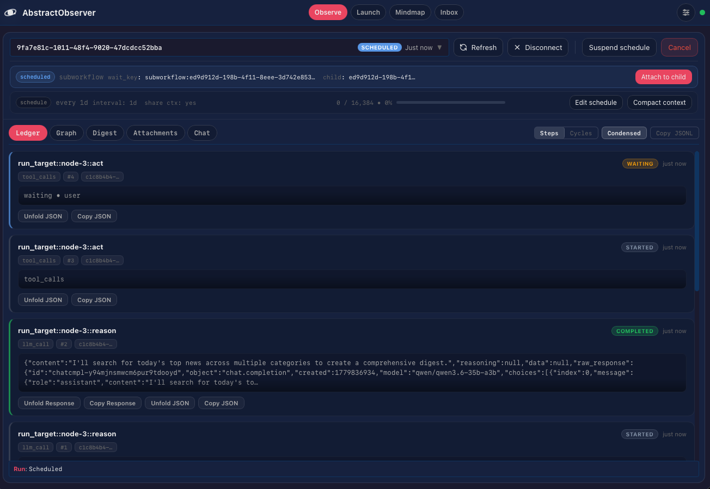

A modular, open-source ecosystem for building durable, observable, multimodal AI systems. Text, voice, image, video, music — one unified interface, any provider, any model, local or cloud.
from abstractcore import create_llm
llm = create_llm("ollama", model="qwen3:4b")
# Text
response = llm.generate("Write a haiku about space.")
# Voice
wav = llm.voice.tts(response.content, format="wav")
# Image
img = llm.vision.t2i("A nebula over mountains")
# Same interface. Any provider. Any model.Start lightweight with just the LLM library, or go all-in with a full production gateway. Both paths lead to the same ecosystem.
Start here if you need a lightweight LLM library for scripts, notebooks, or existing applications. No infrastructure required — just pip install and call. Add multimodal capabilities with plugins as you grow.
pip install abstractcoreYou're building a script, a notebook, or a custom tool. You want to talk to LLMs with minimal setup. You don't need persistent workflows or a server — just a clean API that works the same way across Ollama, OpenAI, Anthropic, or any other provider. Install, import, generate.
# That's it. 3 lines to talk to any LLM.
from abstractcore import create_llm
llm = create_llm("ollama", model="qwen3:4b")
print(llm.generate("Explain quantum computing simply.").content)Start here if you're building persistent AI applications — agents that run for hours, workflows that survive crashes, scheduled tasks. The gateway provides the durable execution layer, and thin clients (browser, terminal, mobile) connect to it.
pip install abstractgateway
# or
docker pull ghcr.io/lpalbou/abstractgatewayYou're building a product — a coding assistant, a monitoring dashboard, a chatbot. You need runs that survive crashes, scheduled tasks, multi-user access, and clients that work across devices. The gateway is your AI control plane: start a run on your laptop, continue it in the browser, inspect it from your phone.
# Start once. Connect from anywhere.
abstractgateway serve --port 8080
# Terminal agent
abstractcode --provider ollama --model qwen3:4b
# Browser UIs (separate devices, same runs)
npx @abstractframework/observer
npx @abstractframework/flowEvery package is independently installable. Hover each block to explore. Use one or compose the full stack.
Text, voice, image, video, music. Same generate() pattern. Capability plugins extend AbstractCore seamlessly — install a plugin and new modalities appear on your LLM instance.
Automated fallbacks ensure capabilities work even when a model lacks native support. A text-only model gains vision through smart captioning. A model without tool support gets prompted tool syntax rewriting.
# ── Python SDK ──────────────────────────────────
# Direct library usage — no server needed
pip install abstractcore abstractvoice abstractvision
from abstractcore import create_llm
llm = create_llm("ollama", model="qwen3:4b")
# 1. Text generation
text = llm.generate("Tell me a story.").content
# 2. Text-to-speech — offline, Piper/Whisper
wav_bytes = llm.voice.tts(text, format="wav")
# 3. Text-to-image — local Diffusers / MLX-Gen / OpenAI
image = llm.vision.t2i("A lighthouse at sunset")
# 4. Vision (image understanding) — works even with text-only models
resp = llm.generate("Describe this image", media=["photo.jpg"])# ── OpenAI-Compatible API ───────────────────────
# Start the server, then use standard endpoints
abstractcore serve --port 8080
# 1. Text generation
curl http://localhost:8080/v1/chat/completions \
-H "Content-Type: application/json" \
-d '{"model": "qwen3:4b", "messages": [{"role": "user", "content": "Tell me a story."}]}'
# 2. Text-to-speech
curl http://localhost:8080/v1/audio/speech \
-H "Content-Type: application/json" \
-d '{"input": "Hello world", "voice": "default"}' \
--output speech.wav
# 3. Text-to-image
curl http://localhost:8080/v1/images/generations \
-H "Content-Type: application/json" \
-d '{"prompt": "A lighthouse at sunset", "model": "flux.2-klein-4b"}'
# 4. Vision (image understanding)
curl http://localhost:8080/v1/chat/completions \
-H "Content-Type: application/json" \
-d '{"model": "qwen3:4b", "messages": [{"role": "user", "content": [
{"type": "text", "text": "Describe this image"},
{"type": "image_url", "image_url": {"url": "data:image/jpeg;base64,..."}}
]}]}'14 packages. Each one independently useful. Together, a complete AI infrastructure.
Unified LLM API. 9+ providers (OpenAI, Anthropic, Ollama, LMStudio, MLX, HuggingFace, vLLM, OpenRouter, Portkey). Tools, structured output, streaming, media, MCP, embeddings, prompt caching, OpenAI-compatible server.
Persistent graph runner with durable execution. Append-only ledger, deterministic replay, pause/resume, snapshots, provenance tracking. Every operation is auditable and workflows survive crashes and restarts.
Agent patterns — ReAct, CodeAct, MemAct loops with durable runs. Configurable tool approval, max iterations, and full observability of every reasoning cycle.
Diagram-based, durable AI workflows for AbstractFramework. Drag-and-drop nodes, export as portable .flow bundles, run as specialized agents anywhere. Works standalone or through AbstractGateway API routes.
HTTP control plane for production AI. Durable runs with SSE streaming, scheduled workflows, bundle discovery, multi-client support. SQLite or Postgres backends. Docker-ready.
A durable coding assistant — available as a terminal TUI and a browser web app. Plan/review modes, MCP tools, persistent sessions. Full audit trail for every interaction.
Full observability dashboard. Browse every run, replay agent cycles, schedule workflows, monitor real-time activity. Every AI decision is transparent and inspectable.
macOS tray assistant with voice mode. Gateway-first thin client with durable runs, workflow selection, real-time voice meter, and one-click voice interaction.
Voice I/O for AbstractCore. TTS (Piper, OmniVoice, Supersonic, AudioDIT), STT (Whisper), voice cloning, multilingual. Works entirely offline on your hardware.
Image & video generation for AbstractCore. Text-to-image, image editing, text-to-video, image-to-video. Powered by Diffusers, MLX-Gen, GGUF, and OpenAI-compatible backends.
Music generation for AbstractCore. Text-to-music via ACE-Step v1.5 (local). Instrumental and vocal tracks, duration control, genre/style prompting.
Temporal triple store with provenance-aware knowledge graph, vector search, and LanceDB backend. Gives agents persistent, queryable memory across sessions.
Schema registry for predicates, entity types, and JSON Schema refs. Provides vocabulary validation so knowledge graphs and agent memory stay consistent.
Diagram-based visual authoring. Drag-and-drop nodes, wire connections, export portable .flow bundles that run anywhere in the ecosystem.

Create workflows that combine LLM calls, voice generation, image generation, conditionals, loops, and subflows. Every node is configurable with provider, model, and parameter controls.
.flow bundle — share with the communityA single workflow turn can produce text, narrated audio, and a generated image. All artifacts are tracked, stored, and replayable through the ledger.


Build self-correcting loops with specialized agents. An intent analyzer feeds an executor agent, whose output is reviewed and optionally revised before delivery. Compose arbitrarily complex reasoning chains.
A durable coding assistant that works in your terminal and browser. Every session, every tool call, every decision is persisted and auditable. Start in the terminal, continue in the browser.



Every LLM call, every tool execution, every reasoning step is recorded in the ledger. Inspect system prompts, user messages, responses, tool calls, and raw JSON. Replay any conversation from history.
Monitor every AI activity. Schedule agentic tasks. Browse the full ledger. Every decision your AI ever made is transparent, replayable, and auditable.

Set up recurring AI jobs with full cron-style scheduling. Daily news digests, code analysis, monitoring reports — with shared context across executions and durable history.
Browse every step, every tool call, every LLM interaction in real-time. The ledger view shows the complete execution trace with timing, status, and full payloads.

Generate images and video on your hardware. MLX-Gen powers Apple Silicon with FLUX.2, Z-Image, Qwen, ERNIE, Wan2.2. Mixed quantization (q4/q8) for efficiency on consumer hardware.
Local video generation via Wan2.2 TI2V 5B with first-frame image-to-video conditioning. Generated entirely on-device.
Generate music from text prompts. Local via ACE-Step v1.5 on Apple Silicon, or remote via ACE Music API. Instrumental and vocal tracks with genre/style control.
Choose how the framework runs based on your hardware, privacy requirements, and cost constraints. All modes use the same code and interfaces.
Remote inference only. Use cloud APIs from OpenAI, Anthropic, OpenRouter, Portkey, or any OpenAI-compatible endpoint. Minimal hardware requirements.
Full local multimodal inference on Apple Silicon. Ollama, LMStudio, MLX, MLX-Gen for images/video. Unified memory enables running large models efficiently.
Local multimodal inference on NVIDIA or AMD GPUs. vLLM, HuggingFace Transformers, Diffusers. High-throughput production workloads with full CUDA/ROCm support.
Thanks to the durable runtime and gateway, conversations and tool histories replay across any device and any application. Start work on the terminal, continue in the browser, check on your phone.
The append-only ledger captures every operation. Any client connecting to the gateway can replay and continue any run from its full history. Gateway-first architecture ensures all runs are durable by default.
Agents need memory. AbstractMemory provides a temporal, provenance-aware knowledge graph. AbstractSemantics ensures schema consistency across the entire ecosystem.
Every fact is a triple (subject, predicate, object) with timestamps, confidence scores, and provenance. Facts expire. Facts can be observations or beliefs. The graph remembers when something was true, not just that it was true.
from abstractmemory import InMemoryTripleStore, TripleAssertion, TripleQuery
store = InMemoryTripleStore()
store.add([
TripleAssertion(
subject="user",
predicate="prefers",
object="dark mode",
scope="session",
confidence=0.95,
provenance={"source": "conversation"}
)
])
hits = store.query(TripleQuery(subject="user", limit=10))# Query the knowledge graph via gateway
curl http://localhost:8080/api/gateway/kg/query \
-H "Authorization: Bearer $TOKEN" \
-H "Content-Type: application/json" \
-d '{"subject": "user", "limit": 10}'
# AbstractSemantics validates predicates
from abstractsemantics import load_semantics_registry
reg = load_semantics_registry()
# 50+ predicates, entity types, CURIE prefixesAbstractSemantics provides the ontology: allowed predicates, entity types, CURIE prefixes. JSON Schema generation ensures every knowledge assertion is valid. No hallucinated predicates, no schema drift.
Switch between providers with a single line change. Same code, same tools, same structured output. From local open-source models to cloud APIs.
# Switch providers with zero code changes
llm = create_llm("ollama", model="qwen3:4b-instruct")
llm = create_llm("lmstudio", model="qwen/qwen3-4b-2507")
llm = create_llm("mlx", model="mlx-community/Qwen3-4B")
llm = create_llm("huggingface", model="Qwen/Qwen3-4B-Instruct")
llm = create_llm("openai", model="gpt-4o-mini")
llm = create_llm("anthropic", model="claude-haiku-4-5")
llm = create_llm("openrouter", model="any/model")
llm = create_llm("vllm", model="your-model")
llm = create_llm("portkey", model="any/model")
# Same interface everywhere
response = llm.generate("Hello", tools=[my_tool], response_model=MySchema)# AbstractCore's server is OpenAI-compatible
# Point any OpenAI SDK or tool at it
from openai import OpenAI
client = OpenAI(base_url="http://localhost:8080/v1", api_key="unused")
response = client.chat.completions.create(
model="qwen3:4b",
messages=[{"role": "user", "content": "Hello"}],
tools=[my_tool_schema],
)
# Works with LangChain, LlamaIndex, Vercel AI SDK, etc.# Install the core LLM library
pip install abstractcore
# Local provider (no API keys needed)
ollama serve && ollama pull qwen3:4b
# Your first call
from abstractcore import create_llm
llm = create_llm("ollama", model="qwen3:4b")
print(llm.generate("Hello!").content)
# Add multimodal capabilities
pip install abstractvoice abstractvision abstractmusic# Install the entire framework
pip install "abstractframework[all]"
# Start the gateway
abstractgateway serve --port 8080
# Launch browser UIs
npx @abstractframework/observer
npx @abstractframework/flow
npx @abstractframework/code
# Or use the terminal agent
abstractcode --provider ollama --model qwen3:4b# Pull and run the gateway
docker pull ghcr.io/lpalbou/abstractgateway
docker run -p 8080:8080 \
-v abstractdata:/data \
ghcr.io/lpalbou/abstractgateway
# Then connect any thin client
npx @abstractframework/observer
npx @abstractframework/codepip install "abstractframework[apple]"Optimized for M-series Macs with MLX, MLX-Gen, and unified memory.
pip install "abstractframework[gpu]"Full CUDA/ROCm support with vLLM, Diffusers, and HuggingFace.
pip install abstractframeworkRemote-only inference to avoid large local dependencies. Works anywhere Python runs.
AbstractFramework is under active development. Here's what's shipped and what we're building next.
AbstractCore (9+ LLM providers), AbstractRuntime (durable execution), AbstractAgent (ReAct/CodeAct/MemAct)
AbstractVoice (TTS/STT/cloning), AbstractVision (T2I/I2I/T2V/I2V via MLX-Gen), AbstractMusic (ACE-Step)
AbstractGateway (control plane), AbstractFlow (visual editor), AbstractCode (TUI + web), AbstractObserver (monitoring)
AbstractMemory (temporal KG), AbstractSemantics (schema registry), agent memory effects
OpenAI Responses API support, Agent Skills integration, advanced prompt caching, expanded model registries, installer UX
Community skill marketplace, shared .flow bundle registry, multi-tenant gateway, enterprise deployment guides, expanded Docker profiles
MIT licensed. No black boxes, no vendor lock-in. You own everything. Inspect, modify, and extend every line of code.
Run entirely offline with open-source models. Privacy and cost control by default. Cloud APIs available when you need them.
Workflows survive crashes and restarts. Resume exactly where you left off. The append-only ledger ensures nothing is lost.
Every LLM call, tool execution, and decision is logged. Replay any run from history. No AI black boxes.
Use one package or the full stack. Every component is independently installable and works with or without the others.
Same code across providers. Same workflows across devices. Export and share .flow bundles with anyone.
Every AbstractFramework package ships llms.txt and llms-full.txt files following the llms.txt standard. AI coding assistants, agents, and LLMs can consume up-to-date, structured documentation directly — no scraping, no hallucination.
The llms.txt specification defines a standard way for projects to provide LLM-friendly documentation. Instead of forcing AI tools to parse complex HTML, these curated Markdown files give LLMs exactly what they need:
llms.txt — Concise overview with key concepts and API surfacellms-full.txt — Complete documentation with all details expanded inline# Point any LLM at the raw documentation
# Always up-to-date from the source repo
# Concise overview (key concepts + API)
https://github.com/lpalbou/abstractcore/blob/main/llms.txt
# Full documentation (everything inline)
https://github.com/lpalbou/abstractcore/blob/main/llms-full.txt
# Same pattern for every package
https://github.com/lpalbou/abstract{package}/blob/main/llms.txt| Package | llms.txt | llms-full.txt |
|---|---|---|
| AbstractCore | llms.txt | llms-full.txt |
| AbstractRuntime | llms.txt | llms-full.txt |
| AbstractAgent | llms.txt | llms-full.txt |
| AbstractFlow | llms.txt | llms-full.txt |
| AbstractGateway | llms.txt | llms-full.txt |
| AbstractCode | llms.txt | llms-full.txt |
| AbstractObserver | llms.txt | llms-full.txt |
| AbstractAssistant | llms.txt | llms-full.txt |
| AbstractVoice | llms.txt | llms-full.txt |
| AbstractVision | llms.txt | llms-full.txt |
| AbstractMusic | llms.txt | llms-full.txt |
| AbstractMemory | llms.txt | llms-full.txt |
| AbstractSemantics | llms.txt | llms-full.txt |
Understanding where AbstractFramework fits in the AI tooling landscape.
| Capability | AbstractFramework | LangChain | CrewAI | Haystack |
|---|---|---|---|---|
| Durable execution (crash-safe) | ✓ Built-in (Runtime) | ~ Via LangGraph | ✗ | ✗ |
| Append-only audit ledger | ✓ Every operation | ✗ | ✗ | ✗ |
| Visual workflow editor | ✓ AbstractFlow | ~ LangFlow (3rd party) | ✗ | ~ Haystack Studio |
| Local multimodal (image, video, music) | ✓ Vision + Voice + Music | ✗ | ✗ | ✗ |
| Apple Silicon optimized | ✓ MLX, MLX-Gen | ✗ | ✗ | ✗ |
| Cross-device continuity | ✓ Gateway + Ledger | ✗ | ✗ | ✗ |
| Knowledge graph memory | ✓ Temporal triples | ~ Basic memory | ~ Basic memory | ✗ |
| OpenAI-compatible server | ✓ Built-in | ✗ | ✗ | ✗ |
| 100% open source (MIT) | ✓ | ✓ MIT | ✓ MIT | ✓ Apache 2.0 |
AbstractFramework is not a replacement for LangChain or CrewAI. It occupies a different niche: an Agentic OS — durable, observable, multimodal AI infrastructure where every operation is auditable, workflows survive crashes, and the same code runs across providers, devices, and deployment modes. Not just an orchestration layer, but the operating system for your entire AI stack.
AbstractFramework gives you the building blocks. What you build is up to you.